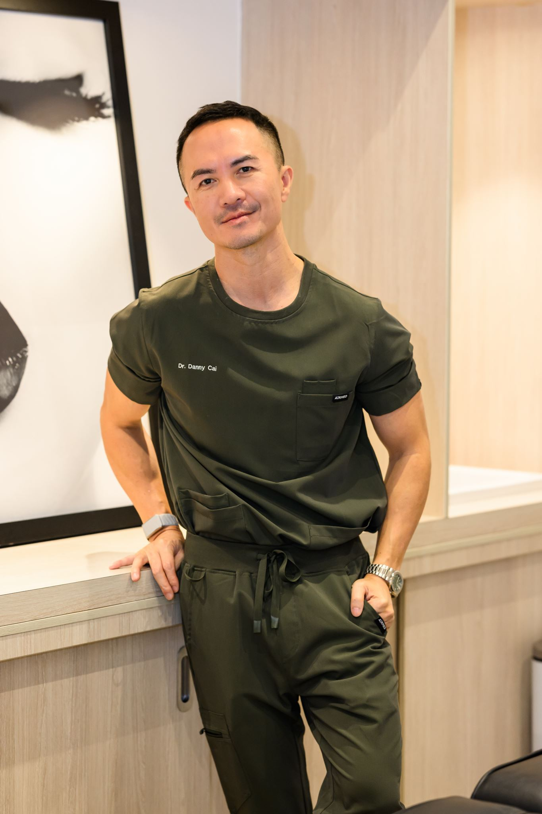
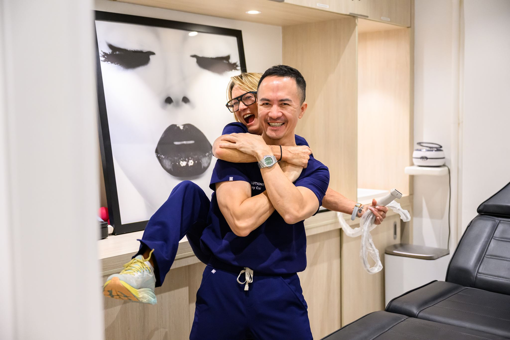

At the clinicI spent a career watching people chase the next test, the next supplement, the next headline. AvaElis exists to do the opposite: measure what genuinely matters, read it honestly, and build a plan you can actually live.
Qualifies in medicine and begins hospital rotations.
Enters GP practice; FRACGP fellowship; builds a long-term patient base.
Advises on health policy and clinical standards at a national level.
Turns to precision diagnostics and healthspan as the frontier of preventive care.
Opens a boutique longevity atelier, one doctor, real data, no hype.
Speaking at the Lifestyle Health Summit 2026, and writing for clinicians and patients on precision longevity.